Parametrische Oberflächendiagramme mit Farbabbildung aus Daten
3D-ParaSurf-DataColormap
Zusammenfassung
In diesem Tutorial wird eine 3D-Kugel mit Hilfe der Daten aus drei Matrizen erstellt. Es wird auch gezeigt, wie die Oberfläche gefüllt wird, um die Kontur der Oberflächentemperatur mit Hilfe der Daten aus einer anderen Matrix anzuzeigen.
- 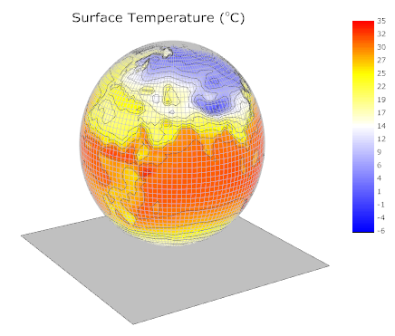
Origin-Version mind. erforderlich: Origin 2015 SR0
Was Sie lernen werden
Dieses Tutorial zeigt Ihnen, wie Sie:
- parametrische Oberflächendiagramme aus Matrixdaten erstellen,
- Konturfüllungen aus einer anderen Matrix festlegen,
- parametrische 3D-Oberflächendiagramme benutzerdefiniert anpassen.
Schritte
Dieses Tutorial basiert auf dem Projekt: <Origin-Verzeichnis>\Samples\Tutorial Data.opj.
Sie können dieses Diagramm auch im Lernzentrum finden. (Wählen Sie Hilfe: Lernzentrum im Menü oder drücken Sie die Taste F11. Öffnen Sie dann Diagrammbeispiel: 3D-Funktionsdiagramme.)
- Öffnen Sie das Projekt Tutorial Data.opj und navigieren Sie zu dem Ordner Parametric Surface with Colormap from Data im Project Explorer (PE).
- Aktivieren Sie die Matrix FUNCA:1/4 und markieren Sie die Daten. Klicken Sie auf die Schaltfläche
 auf der Symbolleiste 3D- und Konturdiagramme, um ein Oberflächendiagramm mit Farbabbildung, wie unten zu sehen, zu erstellen. Sie können dieses Oberflächendiagramm mit Farbabbildung auch erstellen, indem Sie Zeichnen: 3D: 3D Farbabbildung im Hauptmenü wählen.
auf der Symbolleiste 3D- und Konturdiagramme, um ein Oberflächendiagramm mit Farbabbildung, wie unten zu sehen, zu erstellen. Sie können dieses Oberflächendiagramm mit Farbabbildung auch erstellen, indem Sie Zeichnen: 3D: 3D Farbabbildung im Hauptmenü wählen.
- 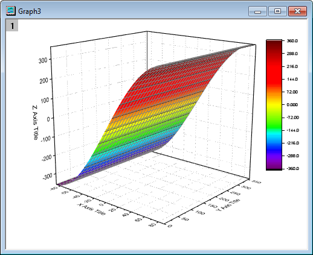
- Klicken Sie zum Aufrufen des Dialogs Details Zeichnung doppelt auf die Zeichnung. Aktivieren Sie auf der Registerkarte Oberfläche das Kontrollkästchen Parametrische Oberfläche und setzen Sie X-Matrix und Y-Matrix auf Mat(2) bzw. Mat(3).
- 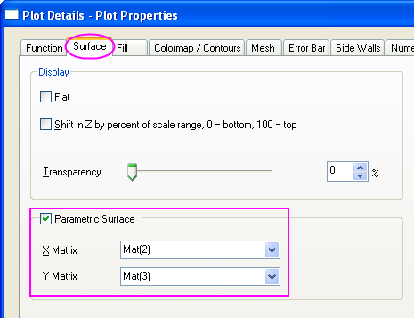
- Klicken Sie auf OK, um den Dialog zu schließen.
- Um die gesamte farbkodierte Oberfläche im Achsenbereich anzuzeigen, verwenden Sie die Schaltfläche Neuskalierung
 auf der Symbolleiste Diagramm. Das Oberflächendiagramm mit Farbabbildung sollte folgendermaßen aussehen:
auf der Symbolleiste Diagramm. Das Oberflächendiagramm mit Farbabbildung sollte folgendermaßen aussehen:
- 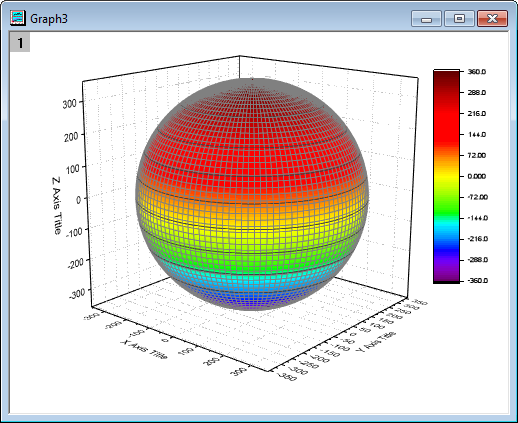
- Klicken Sie zum Öffnen des Dialogs Details Zeichnung doppelt auf das Diagramm. Dieser Dialog wird verwendet, um die Oberfläche benutzerdefiniert anzupassen. Deaktivieren Sie auf der Registerkarte Füllung das Kontrollkästchen in der Gruppe Vordergrundoberfläche vor Identisch und setzen Sie Konturfüllung aus Matrix auf Mat(4). Klicken Sie auf Übernehmen.
- 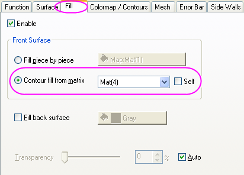
- Wechseln Sie zur Registerkarte Farbpalette/Kontur. Klicken Sie auf die Überschrift Ebene, um den Dialog Ebenen festlegen zu öffnen. Klicken Sie auf Min./Max. suchen und legen Anz. Hauptebenen und Anz. Nebenebenen auf16 bzw. 8 fest. Klicken Sie auf OK.
- 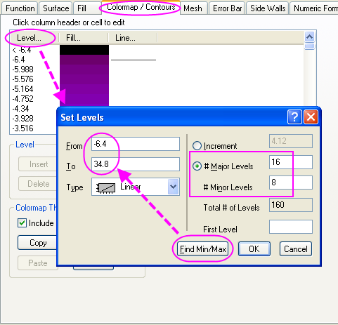
- Klicken Sie auf die Überschrift Füllung, um den Dialog Füllung zu öffnen. Dieser Dialog wird verwendet, um die Farbskala benutzerdefiniert anzupassen. Die Option Palette laden gibt dem Anwender die Möglichkeit, aus einer Liste von verschiedenen Paletten zu wählen. Wählen Sie für Palette laden die Option Temperature aus. Klicken Sie auf OK.
- 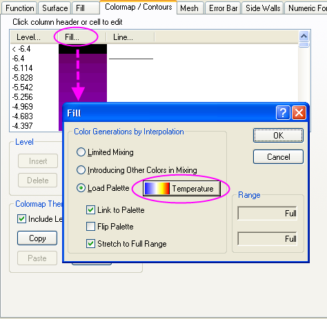
- Klicken Sie auf die Registerkarte Drahtgitter. Setzen Sie die Linienbreite auf 0,05, indem Sie in dem Schriftfeld den Wert direkt eingeben, anstatt das Auswahlmenü zu verwenden. Legen Sie im Abschnitt Vordergrund die Linienfarbe mit Hellgrau fest. Klicken Sie auf Übernehmen.
- 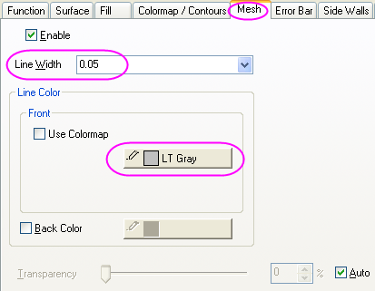
- Aktivieren Sie auf der Registerkarte Numerisches Format die Option Dezimalstellen und setzen Sie den Wert auf 0.
- 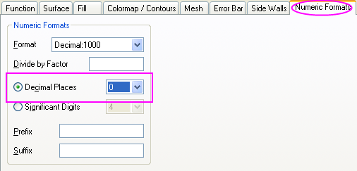
- Klicken Sie auf OK, um diese Einstellungen anzuwenden und den Dialog Details Zeichnung zu schließen. Das Diagramm sollte folgendermaßen aussehen:
- 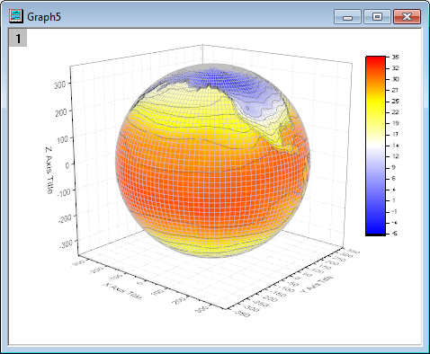
- Im nächsten Schritt werden die Achsen geändert. Klicken Sie doppelt auf die Z-Achse, um den Dialog der Achsen zu öffnen. Gehen Sie zur Registerkarte Skalierung und wählen Sie das Symbol Z. Setzen Sie den Wert für Von und Bis auf -400 bzw. 400.
- 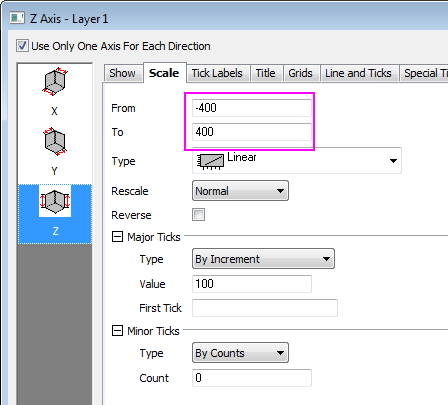
- Gehen Sie zur Registerkarte Titel und halten Sie die Strg-Taste gedrückt, um die Symbole X, Y und Z gleichzeitig auszuwählen. Deaktivieren Sie das Kontrollkästchen Zeigen, um den Achsentitel für alle Achsen auszublenden. Klicken Sie auf OK, um den Dialog zu schließen.
- 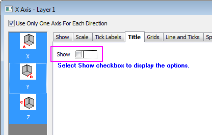
- Klicken Sie doppelt auf die XY-Ebene, um den Dialog Details Zeichnung auf der Ebene Layereigenschaften zu öffnen. Um die Achsen zu verbergen, deaktivieren Sie auf der Registerkarte Anzeige die Kontrollkästchen X-Achsen, Y-Achsen, Z-Achsen im Abschnitt Elemente zeigen.
- 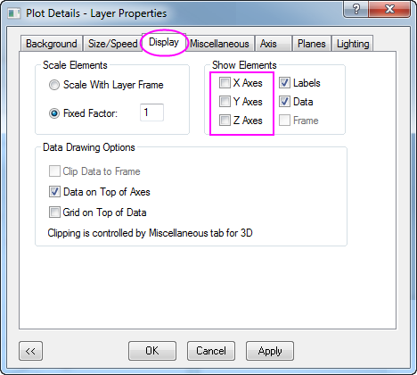
- Um die YZ- und ZX-Ebenen zu verbergen, klicken Sie auf die Registerkarte Ebenen und deaktivieren Sie die Kontrollkästchen YZ, ZX. Setzen Sie die Farbe der übrig gebliebenen XY-Ebene auf Hellgrau. Klicken Sie auf OK, um den Dialog zu schließen.
- 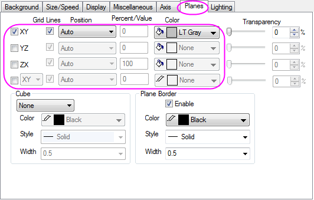
- Im nächsten Schritt wird die Farbskala benutzerdefiniert angepasst. Klicken Sie doppelt auf sie, um den Dialog Eigenschaften Farbskala zu öffnen. Gehen Sie zum Knoten Beschriftungen und setzen Sie die Schriftart auf Verdana.
- 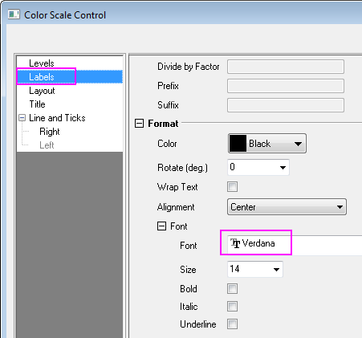
- Gehen Sie zum Knoten Linie und Hilfsstriche und blenden Sie Rahmen und Hilfsstriche aus:
- 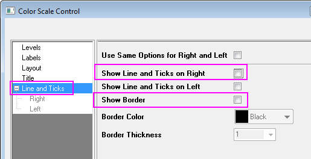
- Klicken Sie auf OK, um die Einstellung anzuwenden, und schließen Sie den Dialog. Markieren und ziehen Sie das Objekt der Farbskala an die gewünschte Stelle.
- Klicken Sie mit der rechten Maustaste auf den weißen Bereich des Diagrammlayers, um ein Kontextmenü aufzurufen, und wählen Sie Layertitel hinzufügen/modifizieren. Klicken Sie auf eine andere Stelle, um die Auswahl des Textfelds aufzuheben, klicken Sie dann mit der rechten Maustaste auf sie und wählen Sie Einstellungen im Kontextmenü, um den Dialog Objekteigenschaften aufzurufen. Legen Sie die Schriftart Verdana fest und geben Sie Surface Temperature (\+(o)C) im Inhaltsverzeichnis ein. Klicken Sie auf OK.
- 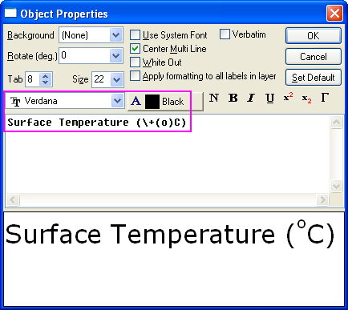
- Klicken Sie auf das Diagrammlayer innerhalb des 3D-Rahmens (nicht Datenzeichnung) und dann auf die Schaltfläche Drehen, wie im Bild unten zu sehen, um den Drehmodus zu aktivieren. Andere Möglichkeiten, um das 3D-Diagramm zu drehen, umfassen die rote Schaltfläche zum Drehen auf der Symbolleiste Hilfsmittel, die verschiedenen Schaltflächen der Symbolleiste 3D-Drehung sowie die Auswahl der Zeichnung, das Drücken der Taste R und die Verwendung des Cursors.
- 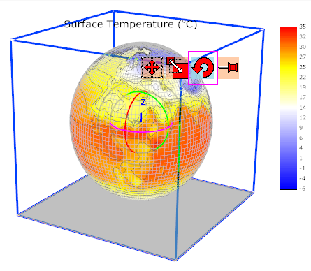
- Drehen Sie die Zeichnung, um eine bessere Ansicht zu erhalten. Das Diagramm sollte dem Bild unten entsprechen: